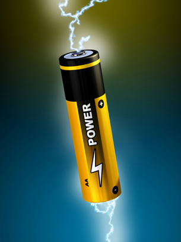

© Andrea Danti/shutterstock
Unit B focuses on electrochemical changes in chemical systems. You will explore these concepts by learning the principles involved in the operation of a technology you probably use every day—a commercial electric cell, sometimes called a battery.
In this unit you will look at chemical systems, and you will investigate them as electrochemical systems—systems involving an exchange of electrons. Electrochemical systems are numerous and varied. Electrochemical systems include, for example, biological and non-biological systems and natural and technological systems.
Module 3 introduces the scientific principles associated with reduction-oxidation (redox) reactions. You will learn how redox reactions can be used to analyze and predict changes in a chemical system and to perform quantitative analysis. This module will support the work you will do in Module 4.
Module 4 explores how technologies, like the commercial electric cell, involve an application of redox reactions. You will use your knowledge of electrochemical change to observe, analyze, and evaluate the design and function of electric and electrolytic cells.
Together these modules develop your understanding that some types of chemical change involve a transfer of electrons. In the last unit of this course you will explore chemical reactions that involve proton transfer reactions. You will apply many of the principles you learn in Unit B to your work throughout this course.
At the end of Unit B you will be able to
In the Unit B Assessment you will explore the scientific and technological aspects of reduction-oxidation reactions, and you will explain and identify their positive and negative characteristics.